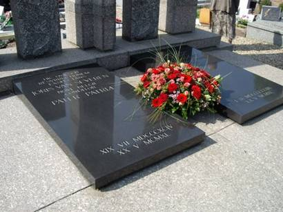
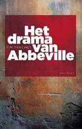

> nieuwsbrief > 2009 - nr 3
Inhoud
Hernieuwen
ledenbijdrage 2009
Wie totnogtoe naliet zijn bijdrage voor het
lopende jaar te vereffenen krijgt hierbij tot uiterlijk 30 juli - de
kans dit
alsnog te doen tegen de gewone voorwaarden, hetzij 25. Na 30 juli
geldt voor
ons 13e jaarboek onherroepelijk de boekhandelprijs van 30.
Zaterdag
16 mei 2009 aan het Bourgoensche
Cruyse
Spijtig genoeg was het de wederzijdse
actoren
dit jaar niet gelukt om hun agendas op elkaar af te stemmen. We
bedoelen
enerzijds de Stichting Joris van Severen (inrichters
van de herdenkingsmis in de kapel van het Slot van Male en het bezoek
aan het
dubbelgraf te Abbeville, dit jaar respectievelijk op 9 en 10 mei) en
anderzijds
het Brugse Abbeville Comité (sinds
enkele jaren inrichter van het herdenkingsmoment aan de
herinneringsplaat in de
toegangspoort tot het Bourgoensche Cruyse vlakbij de voormalige woning
van
Joris van Severen, dit jaar op 16 mei).
Daardoor dienden de belangstellenden voor
99%
hetzelfde publiek zich spijtig genoeg op 2 achtereenvolgende
zaterdagen
Bruggewaarts te begeven; de ene keer om s namiddags in Male, de andere
keer om
s voormiddags in de Wollestraat present te geven! Is het dan zo
moeilijk de
violen te stemmen?
Over Male en Abbeville valt meer te lezen
verderop in dit nummer. Voor wat betreft de plechtigheid van 16 mei:
ook hier
kunnen de inrichters op een geslaagd initiatief terugblikken. Een
initiatief dat
zelfs de plaatselijke overheden niet langer onopgemerkt laten
voorbijgaan en waaraan
ze met spreker en bloemenhulde wensen te participeren. Voor het eerst
gaf dit
jaar ook de West-Vlaamse provinciegouverneur acte de présence bij de
plechtigheid voor ingewijden overigens niet verwonderlijk: hij stond
wel
reeds vaker aan het dubbelgraf te Abbeville.
De voorzitter van de Stichting
Joris van Severen maakt ook deel uit van het Abbeville
Comité. Hij lijkt ons de
juiste man op de juiste plaats om dat noodzakelijke stemmen van de
violen te
bepleiten.
Herdenkingsdata 2010
Zowel de herdenkingsplechtigheid aan het
Bourgoensche Cruyse (in de voormiddag) als de jaarmis in de kapel van
het Slot
van Male (in de namiddag) zullen in 2010 doorgaan op zaterdag 22
mei 2010.
Het bezoek aan het dubbelgraf van Joris van Severen en Jan Rijckoort te
Abbeville is gepland op zondag 23 mei. In 2010 zal het precies
70 jaar
geleden zijn dat het drama van Abbeville zich afspeelde.
Na het overlijden van dit Normandisch
boegbeeld
kwam een Association des Amis de Jean Mabire (AAJM) tot stand, die
een mooi
verzorgde Nieuwsbrief publiceert.In het jongste nummer 22 lente 2009
lezen
we o.m. een getuigenis van Roeland Raes over zijn betrekkingen met
Mabire.
Daaruit blijkt diens geboeid zijn door de persoonlijkheid van Joris van
Severen. Een passende fotomontage met foto van Joris van Severen en het
Verdinaso-embleem illustreert het geheel.
Homilie
Herdenkingsmis -
Male 9 mei 2009
Een beeld kun je van veel kanten bekijken.
Naargelang de lichtinval of
het standpunt dat je inneemt krijgt het beeld een ander uitzicht. Zo
ontdek je
veel facetten van een zelfde kunstwerk. Als de apostel Johannes ons een
beeld
van Christus wil schetsen, dan vindt hij dat hij dat onmogelijk in één
keer kan
doen: hij heeft er een heel boek, een heel evangelie voor nodig. In dat
boek
bekijkt hij Jezus telkens weer vanuit een ander gezichtspunt en elke
keer
belicht hij een ander facet van de wonderbare persoonlijkheid van Jezus.
Zo wordt Jezus in het ene hoofdstuk "het
licht van de wereld"
genoemd. In een ander "het levende water". Dan weer "het brood
des levens". In het evangelie van vorige week werd Jezus als "de
goede herder" voorgesteld, en vandaag legt Johannes Jezus deze woorden
in
de mond: "Ik ben de ware wijnstok"
Alleen mensen die met Jezus verbonden
leven, zegt Johannes, zoals ranken
verbonden zijn met de wijnstok, alleen die zullen vruchten
voortbrengen. Jezus
staat met heel zijn wezen zozeer in God geworteld, dat wij alleen door
Hem met
de bron van ons leven verbonden kunnen worden. In en door Jezus worden
wij met
God en tezelfdertijd met elkaar verbonden. Daarom komen wij als
Christenen
regelmatig samen om verbonden te kunnen leven met Jezus en om ons één
te weten
met elkaar.
Wij die hier vandaag samengekomen zijn
voelen dat we niet alleen staan
met onze Vlaamse en Nederlandse overtuiging en inzet: er staan mensen
naast ons
die denken en voelen en hopen zoals wij en dan ervaren wij wat Anton
van Wilderode
zei van de Vlaamse IJzersoldaten: "Vast en voor immer sloot hen de band
van éénzelfde liefde voor éénzelfde land." In ons samenzijn vandaag
weten
we ons ook en meer dan anders verbonden met iemand die ons, nu haast 70
jaar
geleden ontvallen is: Joris van Severen.
Hij was een mens zoals wij, een mens met
goede kanten en met fouten, met
hoogten en met laagten, maar hij was door alles heen een mens die
rusteloos
zocht naar de zin van het leven, naar schoonmenselijkheid, naar
zielenadel.
In een wereld die verscheurd werd door
oorlog en wapengeweld heeft hij
gezocht naar vrede. In een mensengemeenschap die aan verwarring ten
prooi viel
kwam hij op voor orde.
Waar oppervlakkigheid dreigde werkte hij
aan levensverdieping. Onechtheid
en leugen bestreed hij met zijn streven Ter Waarheid. Tegenover
gemeenheid en
banaliteit stelde hij een hoogstaande levensstijl.
Waar hij zag dat zijn Vlaamse volk door een
staat stiefmoederlijk werd
behandeld, kwam hij op voor recht en gerechtigheid. Bewust van de
nadelen die
de historische verscheuring en verdeeldheid voor de Nederlanden
meebracht,
ijverde hij met vuur voor een nieuwe verbondenheid.
Aan dit leven van zoeken en inzet, van
droom en daad kwam al te vroeg en
al te tragisch een einde. Hij stierf welbewust, bekommerd om zijn
lotgenoten en
naar de woorden van Rodenbach: 'Weer u scherp en eind als een soldaat.
Voor ons, die hier samen zijn komt zijn
beeld voor ogen en zijn geest
leeft in ons midden, als herinnering en oproep. Ik ben ervan overtuigd
dat de
figuur van Joris van Severen het leven van ieder van ons op een of
andere
manier heeft beïnvloed en zin heeft helpen geven, en ongetwijfeld
blijft iets
van zijn bezieling, van zijn droom en inzet in ieder van ons leven.
Wanneer wij
de waarden die zijn leven gekenmerkt hebben hooghouden en eensgezind
verbonden
blijven met elkaar, dan zal zijn droom niet sterven en zal ook onze
inzet
vruchten dragen voor ons Vlaamse, voor ons Nederlandse volk.

Bezinning aan
het graf te
Abbeville, 10 mei 2009
Telkens als wij hier voor dit sobere, maar
door
architect Maurits van Cauwelaert en beeldhouwer Roel DHaese, zo mooi
ontworpen
grafmonument staan, is het alsof wij door een groot venster kijken.
Vóór ons,
in de diepte, de grijze contouren van de stad Abbeville; nog verder in
de
diepte de vallei van de Somme, vooral bij warm weer versluierd door een
ietwat
blauwgetinte waas.
Dat beeld laat ons onwillekeurig denken aan
de
onvergetelijke rust en sereniteit die wij ook terug vinden bij onze
Oud-Nederlandse meesters. Ook zij schilderden hun figuren dikwijls op
de
voorgrond van arcadische landschappen, gevuld met witte en blauwe
bloemen en
gele akelei. Ook de bergen die zij in hun verbeelding zagen, bleven
dikwijls
omfloerst door een ietwat blauwgetinte waas. Zij waren trouwens de
eersten in
de schilderkunst van het Westen die het landschap als decoratief
element
gebruikten. Nog vóór de Italianen. Hans Memling met zijn gratie, die
uit het
Rijnland kwam, de statige Jan van Eyck, vermoedelijk uit Limburg, en
dan een
hele rits epigonen: Hugo van der Goes met zijn Aanbidding en zijn
Portinari-triptiek, Dirk Bouts, Gerard David, Geertgen-tot-Sint-Jans
met zijn
Opwekking van Lazarus
Zij lieten ons allemaal mee genieten van
landschappen,
bekeken doorheen een reusachtig venster.
Het ligt niet in mijn bedoeling hier een
les in
kunstgeschiedenis te geven, helemaal niet. Ik wil enkel een
vergelijking maken.
Ook wij kijken hier voor ons als het ware door een venster naar een
landschap.
Een werkelijk, haast tastbaar landschap. Maar tezelfdertijd en véél
belangrijker ook een symbolisch landschap. Joris van Severen liet ons
doorheen
zijn venster mee kijken naar een nieuwe wereld, die hij in zijn geest
geschilderd had, vóór andere Europeanen er ooit aan dachten. Hij
ontwierp door
zijn werk en de leer die het omgaf, het landschap van een nieuwe
samenleving,
van een nieuwe beschaving, waarvan de grondpijlers bestonden uit
oprechte
overtuiging, intellectuele eerlijkheid en offerbereidheid, pijlers die
scherp
afstaken tegen de politieke verloedering, de lichtzinnigheid, de
onverantwoordelijkheid, de teloorgang van elke moraal van het
partijenregime van
zijn dagen. En
wie durft beweren dat het thans beter is geworden?
Zijn landschap was ver op zijn tijd
vooruit. Op een
moment dat over de Rijn een dwaze Taugenichts zegde du bist nichts,
dein Volk
ist alles, terwijl duizend mijlen verder naar het Oosten een
gewetenloze
dwingeland miljoenen mensen uithongerde, terechtstelde of minstens naar
zijn
Goelag verbande, penseelde hij ons een landschap dat ons vertelde dat
de staat
weliswaar een noodzakelijk middel was, maar toch maar een middel, méér
niet.
Dat de gemeenschap waardevol en het
verdedigen waard
is, maar dat in het centrum van het leven toch steeds de mens, de
persoon dient
te staan. Hij was een der eersten om ons te vermanen voor een
levensopvatting
die de mens verminkt en hem onbeschermd overlevert aan de Moloch-staat.
Hij was
een der eersten die in een politiek programma, zijn programma, durfde
herinneren aan de heilige eisen omtrent de persoon, die er aan durfde
herinneren dat de persoon een einddoel heeft: God, bron
van alle recht en alle orde. Ook toen, op dit
scharniermoment van de grote Auseinandersetzungen, stond andermaal in
onze
gewesten een man op die Europa de weg wees.
Beste vrienden,
Als wij voor dit grafmonument staan, is het
alsof wij
in de donkere kamer van onze zorgenzware tijd staan, met zware
overgordijnen
die langzaam worden weggeschoven, waardoor het daglicht in de kamer
dringt. En
dan plots, in één ruk, wordt dat venster opengeworpen, baadt de kamer
in het
volle zonlicht en waait er de tot leven wekkende frisse wind van het
volle
leven door ons heen, die de oude rotheid, de oude voosheid voor goed
verbant.
Laat onze trouw daarom sterk zijn als het
graniet van
dit grafmonument.
In
het najaar van 2007 werd
op Canvas, in de reeks Keerpunt een VRT-documentaire vertoond over
het
bloedbad van 20 mei 1940, waarbij in het Noord-Franse stadje Abbeville
21
mensen geëxecuteerd werden. Ze behoorden tot de velen die in de chaos
van de
Duitse inval door de Belgische autoriteiten als 'staats-gevaarlijk'
waren
bestempeld. Tim Trachet, werkzaam als documentalist, stond in voor de
historische research en het scenario van dit docudrama.
Naderhand stelde hij ook dit
bloedstollende verhaal te boek onder de titel Het drama
van Abbeville. Onder de 21 slachtoffers van het drama van
Abbeville behoorden ook de Verdinaso-leider Joris van Severen en zijn
strijdgenoot, de voormalige communist Jan Rijckoort.
De studies en getuigenissen
over 20 mei 1940 te Abbeville vullen stilaan een kleine boekenplank,
waarvan
het lijvige Dossier Abbeville van
Carlos Vlaemynck wel de hoofdbrok uitmaakt. Men zou dus de terechte
vraag
kunnen stellen: waarom andermaal een boek daaraan gewijd?
Het antwoord ligt voor de
hand en geld evenzeer voor de zoveelste maal waarmee het drama in scène
werd
gebracht: het drama fascineert en grijpt de toeschouwer naar de keel;
er is
immers geen zinnige verklaring voor het gebeuren, geen verantwoording
voor het
zinloze geweld. Zo ook ervaart het de lezer van deze zoveelste versie
van het
reeds lang algemeen gekende verhaal.
Tim Trachet praat overigens
zijn voorgangers niet alleen maar na; hij weet ook nieuwe - eigen
accenten te
leggen. Maar ook hij komt niet tot de uiteindelijke afronding van het
beeld, de
puzzel blijft onafgewerkt voor wat betreft schuld en
verantwoordelijkheden voor
de gebeurtenissen op elk uur tussen 10 en 20 mei 1940.
De auteur besteedt ook
aandacht aan de verdere lotgevallen van de overlevenden en van de
rechtstreekse
verantwoordelijken voor het aanrichten van het bloedbad. Ook de
oprichting van
het monumentale dubbelgraf van Van Severen en Rijckoort en de
jaarlijkse
bedevaarten naar het dubbelgraf worden gememoreerd. In zijn
bibliografie
verwijst Trachet overigens naar zijn briefwisseling met ondergetekende
als bron
in deze. Maar onterecht is zijn
bewering (p. 146) als zou lange tijd ook een delegatie van de
Oranjejeugd, die
teksten citeerde en een erehaag met
vlaggen vormde. Die erehaag aan weerszijden van het graf is er
jarenlang
geweest, die vlaggen waren er nooit,
evenmin trouwens als uniformen!
Op Trachets vraag: Er wordt
algemeen gezegd dat er gedurende vele jaren
regelmatig herdenkingsplechtigheden en dergelijke hebben plaatsgevonden
door
aanhangers van Van Severen in Abbeville, hetzij bij de kiosk, hetzij
bij zijn
graf. Ook in Abbeville weet men daarover te vertellen. Er is sprake van
demonstraties in uniform,wat de
plaatselijke bevolking niet erg kon appreciëren, hebben
we hem waarheidsgetrouw geïnformeerd vanuit onze eigen ervaring, nl.: persoonlijk heb ik sedert het einde van de
jaren '50 vrij regelmatig deelgenomen aan de Bedevaart naar Abbeville.
Die
bedevaarten werden in die jaren, wat de deelname betreft, succesvol
ingericht
door het Nationaal Studie- en Documentatiecentrum JvS (
). In al de
jaren dat
ik aan de bedevaart deelnam heb ik er nooit
ook maar enige vorm van uniform
ontwaard; daar werd overigens door Jef Werkers streng de hand aan
gehouden: "noch vlaggen, noch uniformen"
werden daar getolereerd. De bedevaarten (
) hadden steeds hetzelfde
stramien. Er werd verzameld beneden aan het kerkhof en stoetsgewijze
naar de
zijingang gewandeld. Eens aan het graf legde men (
) een krans met rode
rozen
op het graf, werd het Wilhelmus gereciteerd en brachten de aanwezigen
stilzwijgend hun individuele groet aan het graf. Daarop werd het
kerkhof in
stilte verlaten. In dit stramien kwam enige verandering toen
Oranjejeugd er in
groep (maar steeds in burger) aan
ging deelnemen. Toen debiteerde een van die jongeren een korte
bezinningstekst
en vormden jongeren een "erehaag" aan weerszijden van het
grafmonument.
Waarom
de auteur in zijn voor het overige gedegen en sereen opgebouwde verhaal
een
dergelijke onnauwkeurigheid liet glippen waarvan de onjuistheid door
tientallen
aanwezigen kan weerlegd worden blijft ons een open vraag. Houden we
het op
een lapsus, die niemand hoeft te hinderen om zich dit verdienstelijke
beokje
aan te schaffen.
________________
N.a.v.: Tim Trachet, Het drama van
Abbeville,Uitgeverij Houtekiet,
174 blz., 18,50 .
Te Oostende overleed op 23 mei 2009 Jan
Debusschere (°14 oktober 1914). Hij was een zoon van Honoré
Debusschere,
een van de mecenassen van het Verdinaso.
Gerard
Laton (°13 februari
1923) overleed te
Gent op 26 januari 2009. Gerard was gehuwd met Gerarda Arfeuille, een
telg uit
de gekende Ieperse Dinasofamilie. (MvdB)
Te Antwerpen overleed op 21 maart 2009 Jan
de Vriese (°Hamme 9 augustus 1925). Jan kreeg zijn nationalisme
van huis
uit mee; vanaf 1935 stond hij in het Jong-Dinaso. (MvdB)
Vader was een overtuigd
Vlaams-nationalist én Groot-Nederlander. Zijn moeder was een
Waals-Luxemburgse
wiens Nederlandsonkundige vader uit hoofde van zijn douaniersberoep in
het
Waasland was terecht gekomen. De kermis in Kemzeke deed de rest.
Tijdens de Eerste Wereldoorlog
waren de ouders van Willem Melis lid van de Vlaams-nationalistische
Bond van
Jan Wannyn. En de piepjonge Willem ging zélf de boer op om
handtekeningen te
sprokkelen voor de zelfstan-digheidsverklaring van Vlaanderen. In
Kemzeke
alleen haalden ze méér dan honderd handtekeningen op, wat het dorp wel
tot het
meest activistische van Vlaanderen zal gemaakt hebben
Bij zijn
grootmoeder en
zijn Franstalige nonkels die intussen naar Sint-Niklaas verhuisd waren
had men
het ondertussen over les sales activistes. De Melissen kregen wegens
hun
activistische overtuiging na de oorlog een stukje volkswoede over zich.
Maar ze
wisten aan het ergste te ontsnappen.
Na de oorlog kwam Willem Melis
terecht in het college te Sint-Niklaas. Hij werd er opgenomen in de
Vlaamsgezinde Wase Studentengilde én in de heftige discussie tussen
minimalisten en maximalisten. Zeg maar diegenen die nog geloofden in
België en
de radicalen die droomden van een zo zelfstandig mogelijk Vlaanderen.
Het is een periode van
toenemende radicalisering en het AKVS (Algemeen Katholiek Vlaams
Studentenverbond) waar de Wase Studentengilde bij is aangesloten
evolueert
steeds meer in anti-Belgische zin. Als Melis in 1927 een AKVS-landdag
wil
organiseren in Sint-Niklaas krijgt hij zowel van het katholieke
stadsbestuur
als van de bisschop nul op rekest. 1927 is het jaar voordat de KSA
(Katholieke
Studenten Actie) tot stand komt, het meer gezagsgetrouwe antwoord op
het in de
ogen van de bisschoppen té Vlaamsgezinde AKVS. Maar de Landdag ging wel
door.
Zij het zonder gezongen mis of ontvangst op het stadhuis.
In 1926 had Melis zijn studies
voor rechten aangevat te Leuven. Hij werd er vanzelfsprekend voor een
Vlaamsgezind student lid van het KVHV (Katholiek Vlaams Hoogstudenten
Verbond). Later zelfs hoofdredacteur van het hoogstudentenblad Ons Leven. Maar in 1930 met de
oprichting van de Nederlandstalige universiteit in Gent vertrok hij
naar Gent
waar hij eveneens een actieve rol speelde in het Vlaamsgezind
studentenleven. De
belangstelling van de jonge Melis ging verder dan Vlaanderen. Een jaar
lang
studeerde hij in Nancy.
De sympathieën van zijn nonkel
Paul Orban voor Benito Mussolini hij had er zelfs een enthousiaste
brochure
over geschreven - maakten dat hij erg goed op de hoogte was van wat er
in
Italië gebeurde. Maar ook de geschriften van de conservatief-katholieke
Action
Française volgde hij op de voet. Het waren dé revolutionaire stromingen
van die
tijd waar in kringen van jonge katholieke intellectuelen met veel
belangstelling naar werd uitgekeken.
Zijn belangstelling voor
Nederland leidde hem naar de Groot-Nederlandse Studentencongressen waar
hij
contact legde met gelijkgezinden. Katholieke jongeren en studenten, die
in de
chaos van
Willem Melis studeert in 1931
af als doctor in de rechten en startte als stagiair bij zijn oom die
een
advocatenpraktijk had in Sint-Niklaas. Ondertussen was hij lid geworden
van het
Vlaamse Front de zogenaamde Frontpartij de partij van de radicale
Vlaamsgezinden. Maar de opvattingen van die Vlaamsgezinden lagen ook
toen -
soms ver uit elkaar.
En ondertussen hakten de
dichter Wies Moens en Joris van Severen altijd maar harder in op het
traditionele Vlaams-nationalisme dat ze be-sluitloosheid en
onduidelijkheid
verweten. Zij pleitten niet voor een of ander zelfstandig Vlaanderen
maar voor
een Diets Rijk - en geheel naar de mode van
Maar Melis was er de man niet
naar om zijn opvattingen op te sluiten in het keurslijf van een al te
strakke
organisatie. In tegenstelling met veel van zijn dinaso-vrienden bleef
hij
contacten onderhouden buiten het Verdinaso. Met vroegere VNV-vrienden,
maar ook
met meer gematigde flaminganten.
Is hij het die Van Severen
uiteindelijk op de idee bracht van de nieuwe marsrichting? Feit is dat
de
fameuze koerswijziging waarbij het Verdinaso ging pleiten voor het
herstel van
de oude Bourgondische Nederlanden (dus met inbegrip van Wallonië en
Luxemburg)
voor het eerst in Kemzeke gelanceerd werd. Hier op de Voorhouthoeve in
juli
1934. De flamingant Melis was ook een overtuigd aanhanger van die
nieuwe
marsrichting. Hij geloofde in de onlosmakelijke band tussen wat we
gemakshalve
België, Nederland, Luxemburg kunnen noemen. Maar ook in de verschillen
die dit
geheel van regios kenmerkt.
Zijn schrijverstalenten
maakten hem uiteindelijk ook hoofdredacteur van Hier
Dinaso! dat hij een nieuwe, veel minder grimmige, stijl
aanmat. Maar Melis is té genuanceerd, té breeddenkend voor het strakke
Verdinaso. In het begin van de oorlog probeert hij de beweging nog uit
het
colla-boratievaarwater te houden. Maar zijn poging mislukt ten dele en
hij
wordt zelfs uitgesloten door de tot collaboratie geneigde vleugel.
Zijn ervaringen met Hier Dinaso! komen hem goed van pas.
Tijdens de oorlog leidt hij de pers en documentatiedienst van de
Nationale
Landbouw en Voedingscorporartie, de organisatie die instaat voor de
landbouw-productie
en voedingsdistributie. Hij was ook voorzitter van Boerenhulp aan
stadskinderen dat tegengewicht moest vormen voor de Kinderland-verschickung,
georganiseerd door de al te Duitsgezinde
DeVlag.
Dat alles werd hem na de
oorlog zwaar aangerekend. Half oktober werd hij hier op de
Voorhouthoeve
aangehouden en hij bleef twee maanden opge-sloten. Die ervaring maakte
van hem
allesbehalve een verbitterd of ontgoocheld man. In de moeilijke jaren
van de
repressie hielp hij waar hij kon.
En hij werd in 1947 de eerste
hoofdredacteur van de toen Vlaamsgezinde De
Standaard. Zijn onafhankelijkheid en zin voor pluralisme werden
echter maar
matig gesmaakt. Melis was en ik citeer te abstract van geest en te
cultureel aangelegd. Bovendien werd hij voor een katholiek dagblad
als niet
katholiek genoeg beschouwd. Hij werd later nog chef redactie van De Vlaamse Linie. Maar uiteindelijk nam
hij opnieuw zijn ware roeping op: die van advocaat.
Zijn engagement bleef. Een
engagement dat vertrok vanuit de betrokkenheid en verworteldheid met
zijn
streek. Kemzeke - het Waasland. En de mensen ook de gewone lieden
die het
bewoonden. Hij werd niet geheel onterecht omschreven als de Vader des
Waaslands.
Willem Melis was verknocht aan
zijn streek, aan het Waasland, aan Vlaanderen. Maar navelstaarderij was
hem
vreemd. In die zin bleef hij ijveren voor Heel-Nederlandse integratie
en was
hij betrokken bij tal van grensoverschrijdende initiatieven. In die zin
ook
zijn geloof in een federaal geordend Europa. Eenheid en verscheidenheid
waren
voor hem steeds com-plementaire begrippen.
Persoonlijk heb ik geen
herinneringen aan Willem Melis. Ik heb de man nooit persoonlijk gekend.
Maar
uit wat hij schreef, uit de indruk die hij tot op de dag van vandaag
heeft
nagelaten blijkt wat een bijzondere figuur hij was. Een seigneur. Een
Vlaming,
een Waaslander die het verdient om onder de aandacht gehouden te
worden. Zeker
in een land waar kwaliteit al te vaak verward wordt met (politieke)
middelmatigheid.
_______________
Bron: voordracht gehouden n.a.v. de
onthulling van de gedenkplaat aan de Voorhouthoeve de voormalige
woning van
Willem Melis - op 29 juni 2008.
Over
Tinels lied Dietschland
Anno 2007 werd besloten de Antwerpse
professor Joris
Gerits (°1943) een huldeboek aan te bieden, in de vorm van een
aflevering van
het bekende tijdschrift Revolver. Het is een origineel opus
geworden.
Inderdaad, kort voordien had de feesteling zijn memoires uitgegeven1
en zo kwam men op de gedachte meer dan 175 auteurs, academici,
kunstenaars en
specialisten te verzoeken er twee trefwoorden uit te kiezen en daar een
voetnoot van circa 150 woorden
aan te wijden. Gerits collega Ludo Simons (°1939), de zoon van Jozef
Simons
(1888-1948) - de auteur van het overbekende boek Eer Vlaanderen
vergaat (1927)
en de tekstschrijver van het lied Kempenland -, die zijn
sporen heeft
verdiend in de Taalunie, als conservator van het AMVC en als
hoofdbibliothecaris van de vroegere UFSIA (thans UA), bovendien sinds
1997 lid
is van de Koninklijke Academie voor Wetenschappen, Letteren en Schone
Kunsten
van België, opteerde voor de begrippen degelpers en Dietschland.
Dit
laatste lemma nemen we over, met de instemming van professor Simons.
Achter één
naam hebben we ons veroorloofd tussen vierkante haakjes de levensdata
mee te
delen. Voorts hebben we een paar voetnoten voorzien.
Dietschland wordt groot, of Vlaandren
wordt
groot? Jef Tinel (1885-1972), neef van Edgar, en kapelmeester van het
Verdinaso, schreef het lied in 1937 voor Jong-Dinaso; hij droeg het op
aan zijn
neef Erik, zoon van beeldhouwer Frans Tinel. De tekstdichter, Roger
Lammens
(1913-1977), is roemloos verdwenen (terecht, zegt Geert Buelens).3
De jonge Oostendenaar debuteerde in 1931 met post-ekspressionistiese
gedichten in De Tijdstroom.4 Tijdens de oorlog
schreef hij
andere verzen (Hebt gij den wapenkreet gehoord?) in het verkeerde
blad, werd
hoofdstamheer in de verkeerde jeugdbeweging en belandde na de oorlog
in het
Klein Kasteelje, niet als asielzoeker.5 In recente
liedboeken en in
de liederendatabank van het Algemeen Nederlands Zangverbond staat
alleen nog de
variant Vlaandren. Zo werd het al gezongen in 1941 op het
Vlaamsch-Nationaal
Zangfeest in Brussel,6 zo stond het in De Vlaamsche
Zanger, deel
VII, 1942, samengesteld door Willem De Meyer.7 Maar de
versie met
Dietschland is de echte.
Noten
1 J. Gerits, 365. Een dagboek, Adam:
Meulenhoff, 2007,
317 p.
4 Het alles samen neo-romantische (dixit
Lieven Rens
[1925-1983] tijdschrift De Tijdstroom verscheen van 1930 tot
1934;
belangrijke medewerkers waren o.m. Pieter Geert Buckinx (1903-1987),
André
Demedts (1906-1992), Paul de Vree (1909-1982), René Verbeeck
(1904-1979), Jan
Vercammen (1906-1984).
5 Roger Lammens was voor W.O.II
Jong-Dinasoleider geweest en
bij de eenmaking van de jeugdbewegingen in de oorlogsjeugdbeweging NSJV
terecht
gekomen.
6 Was dit toen reeds een toegeven aan de
eisen van de Duitse
bezetter, voor wie de termen Diets en Dietsland alleen nog maar in
een
culturele context geduld werden? Mocht dit zo zijn, dan is het des te
minder
verklaarbaar waarom het ANZ deze oekaze van de bezetter na de oorlog
bestendigde!
7 W. De Meyer (1899-1983) was
in 1933 één der stichters van het Vlaamsch Nationaal Zangverbond en
na
W.O.II actief lid van het Algemeen Nederlands Zangverbond.
Het
Verbond der Nationale Onafhankelijkheid - Ligue de lIndependance
Nationale
In zijn
bijdrage Werd
Joris van Severen dan toch door de Franse
inlichtingsdienst
verhoord? in Nieuwsbrief Joris
van Severen, 7e jg., nr.
3/2003, pp.
12-13, citeerde Carlos van Louwe uit een geheim Frans document dat
recent uit
het fonds OSOBY boven water kwam. Daarin werd Joris van Severen secrétaire
général de la legion nationaliste belge genoemd.
Door
deze
formulering dacht de lezer ongetwijfeld aan het Legion Nationale,
de
Franstalige beweging van Paul Hoornaert. Men verwarde het Legion
Nationale
met de Ligue de lIndependance Nationale in het Nederlands
het Verbond
der Nationale Onafhankelijkheid dat door Pierre Nothomb en
Joris
van Severen opgestart werd eind 1939.
Werd
deze
spraakverwarring in de hand gewerkt door Belgische instanties? Het
vermoeden is
reëel. Intimi van Van Severen hadden er weet van dat kringen rond
Camiel
Huysmans, tijdens een eetmaal op een Flandriaboot, de uitschakeling van
Van
Severen overwogen hadden. Rachel Baes heeft de binding
Huysmans-Delierneux
vooropgesteld en de bescherming (na een zedenzaak) en de bevordering
(tot
verantwoordelijke van de kampen voor opvang van vreemdelingen) die
laatstgenoemde van eerstgenoemde genoot.
Komt
ooit de
gehele waarheid misschien nog aan het licht?
Nicolas
Bourgeois en Jean-Marie
Gantois over Joris van Severen
In de jaren zeventig tot aan
zijn dood in 1982 heb ik uitvoerig gecorrespondeerd met Meester Nicolas
Bourgeois, een van de voormannen van het Vlaams Verbond in Frankrijk.
Op mijn vraag of hij Joris van
Severen had gekend, antwoordde Bourgeois in een brief van 20 november
1975 het
volgende:
Ik heb Joris van Severen
nooit persoonlijk ontmoet. Wat ik over Van
Severen hoorde had ik van Jean-Marie Gantois die de man iets té
reactionair en
aristocratisch vond. Gantois vond de stijl van het Verdinaso te
militaristisch
om een populaire beweging in Vlaanderen te kunnen worden.
Tijdens een interview dat
enkele weken later volgde, verduidelijkte Bourgeois een en ander:
De stijl van het Verdinaso
was voor ons uiteraard niet bruikbaar.
Verder, vergeet ook niet dat Gantois, boven alles, allergisch was aan de invloed van het
denken van Maurras, un ennemi de
race, die hij ook meende waar te nemen
bij van Severen.
Hij verafschuwde Maurras en
Pétain, en evenzeer Franco en Mussolini.
Jean-Marie Gantois had het niet begrepen op de Latijnse invloeden en
stijl.
Voor het overige voelden wij ons natuurlijk zeer verwant met alle
sympathisanten van de Nederlandse Gedachte.
Noot: aan de verhouding Jean-Marie
Gantois-Joris van Severen werd voorheen reeds aandacht besteed in onze Nieuwsbrief 2001/2, pp. 11-12.
In deze rubriek verwijzen we
zonder veel commentaar naar recente publicaties waarin Joris van
Severen en/of
het Verdinaso vermeld worden. We citeren de meest treffende passussen
woordelijk zonder daarin volledigheid na te streven. We verzoeken onze
lezers,
met ons, uit te zien naar publicaties die voor deze rubriek 'stof'
kunnen
leveren en ons kopie van de betreffende passages toe te sturen.
Abbeville,
20 mei 1940
Ces prisonniers, personne ne sait
réellement qui ils sont, ni doù ils viennent, ni dailleurs pourquoi
ils sont
là.
Il y a des Belges, surtout, mais
surtout des Hollandais, des Italiens, des Allemands, des Polonais, des
Tchèques, des Russes, un Danois, un Suisse. Un Canadien même, Robert
Bell de
Montréal, lentraîneur de léquipe nationale allemande de hockey sur
glace.
Il y a des fascistes, des
anarchistes, des communistes, des rexistes et des Dinaso. Une vieille
femme et
sa petite-fille. Un courtier en bourse et un moine bénédictin, Ludwig
Wachter,
en religion frère Thomas, du monastère de Cornéliemünster, à
Aix-la-Chapelle.
II y a des peintres en bâtiment italiens, des plombiers belges, des
négociants
en lingerie féminine, un juif hongrois, ancien de la police
républicaine
espagnole, un garçon de café italien réfugié politique, un
maître-imprimeur, un
coiffeur, un journaliste anti-fasciste.
Il y a un leader politique, un
ingénieur scandinave, qui est avec une quasi-certitude un officier
allemand des
services despionnage, des prévenus de droit commun.
Le 10 mai, le gouvernement beige
a fait arrêter des milliers de personnes qui, â des titres divers, lui
paraissaient suspectes: sentiments pro-allemands, origine allemande ou
italienne, espionnage, situation irrégulière, activité communiste,
activité
fasciste, toutes sortes de raisons, parfois contradictoires, ont été
avancées.
Pourquoi
Règlements de comptes politiques?
Décisions suba1ternes? Effets de panique devant lavance allemande? En
tous
cas, ils sont là, hommes, femmes, jeunes filles et vieux messieurs,
grelottants,
assis sur le béton, dans un noir absolu.
Adossé au pilier central, émacié,
la barbe non rase, abattu, silencieux, dans un complet bleu fripé,
Joris van
Severen.
Joris van Severen est le leader
des Verdinaso, mouvement politique qui se veut un ordre, une élite,
davantage
quun parti. Davantage quun chef populaire, Van Severen est un
visionnaire.
Davantage que le pouvoir, son objectif est la renaissance du peuple
thiois les
Hollandais, Flamand, Wallons,
Luxembourgeois
réunis par leur unité originelle profonde. Le pays thiois de Van
Severen, cest
le pays réel de Maurras, traduit aux Pays-Bas. Et Van Severen, comme
Maurras,
est de culture chrétienne: élevé chez les jésuites, il est pieux, mais,
â la
différence de Maurras, il est ardemment catholique.
Nationaliste, élitiste,
antiparlementaire, antisémite, royaliste, Van Severen se proclame avant
tout
pour lunité de ce peuple thiois quil appelle, ce Bénélux qui naîtra
dans
quatre ans, tout en refusant naturellement cette compromettante
paternité.
Trois partis belges, en 1940,
semblent acquis au fascisme: le rexisme de Léon Degrelle, qui compte 21
membres
au parlement, le VNV (Vlaams Nationaal Verbond) de Staf de Clercq, qui
compte
16 parlementaires et le Verdinaso, de Joris van Severen, dont léclat
des
cérémonies de style hitlérien frappe fortement lopinion. Les deux
premiers
seraient soutenus par létranger.
Degrelle, arrêté, sera, comme Van
Severen, transmis aux autorités françaises et Staf de Clercq, qui, le
10 mai,
avait pourtant donné lordre â ses partisans enrôlés de déserter en
masse, et
de ne pas tirer, sera libéré le soir même de son arrestation.
Esthète davantage que politique,
peut-être sans génie et certainement sans style, moraliste, même
moralisant,
exigeant pour soi-même, courageux, ennemi des compromissions, Van
Severen a le
courage de dénoncer ce quil réprouve. Ascète au pays de la frite et de
la
bière, cet ancien député de Bruges nest pas un leader populaire.
Visionnaire
hanté par un passé grandiose, le front immense, les lèvres dures, il a
donné à
son mouvement lallure dun ordre militaire, entre les Croisés et les
troupes
dassaut de Hitler.
Vêtus duniformes couleur de
gazon roussi, sac au dos, précédés de tambours de lansquenets et de
fifres, les
Dinasos faisaient dinterminables marches de jour et de nuit ; nul ne
savait au
juste pourquoi. Je crois, écrit Léon Degrelle, qui la bien entendu
connu, que
Van Severen voyait dans cette vie dure et disciplinée un moyen de
dégager ses
sens dune certaine médiocrité ventrue fort en honneur au pays de
Breughel. Il
veillait à donner à toutes les manifestations de ses adhérents un style
de vie
austère, rigide, presque glacial. Lorsquil faisait un discours, il
était
interdir dapplaudir. Cet homme avait un tempérament de grand maître de
templiers.
Onverduitst, onverfranst, ni
Allemand, ni Français, mais Thiois, Van Severen, indiscutablement
fasciste,
nest pourtant certainement pas nazi et encore moins pro-germanique.
Des nazis,
il a surtout emprunté les clichés esthétiques: chemises brunes et
culottes de
cheval, tambours, bannières et ceinturons. Catholique, loyal envers son
roi,
Van Severen ordonnera à ses fidèles qui sont nombreux, dès le 12 mars
1939, de
servir avec dignité, volonté, austérité, simplicité dans larmée belge
contre
lenvahisseur allemand.
Dans une note à Berlin du 2 août
1940, Reeder, chef de 1administration militaire allemande
doccupation,
analysant le parti Verdinaso, le définit comme politiquement douteux.
Il
interdira le mouvement en 1941.
Mais dinaso signifie
national-solidariste et nazi national-socialiste Nazi-Nazo,
beaucoup se
contenteront de lamalgame, excuse absolutoire qui apaisera bien des
consciences.
Personnage ambigu, qui peut dire
ce quil eût fait dans la suite de la guerre? Eût-il suivi Degrelle,
qui devint
totalement nazi? Eût-il choisi la résistance? Comment savoir? Les
Dinaso,
désorientés, sans chef, séparpilleront bientôt aux quatre vents de
lépoque:
collaboration, résistance, attentisme, exil.
Le ministre de
______________
Henri de Wailly, Le
coup de Faux lassassinat dune ville,
Abbeville 1940, Editions Copernic, Parijs, 1980, pp. 81-84